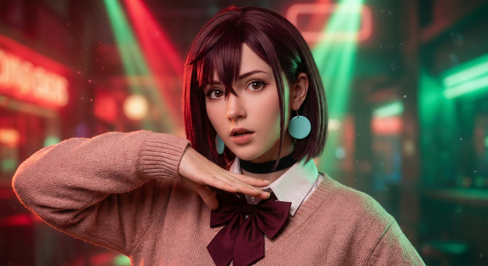
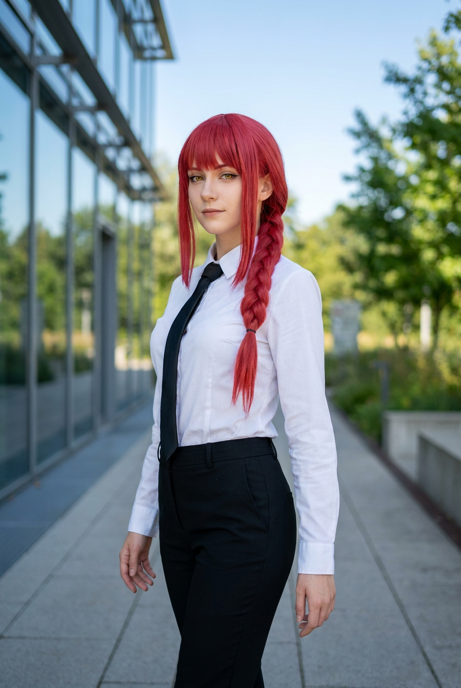
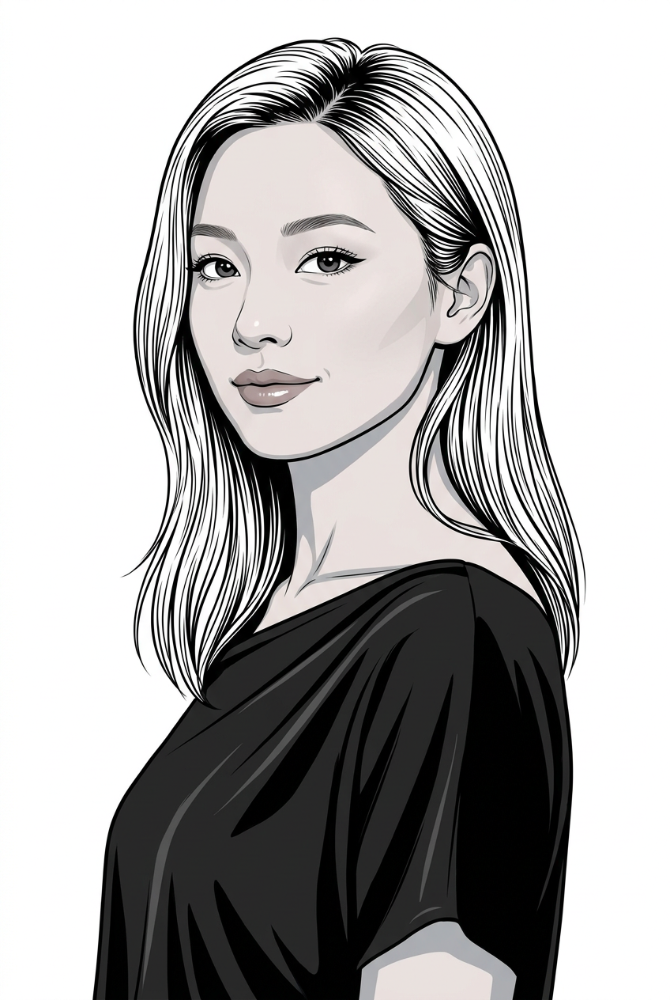
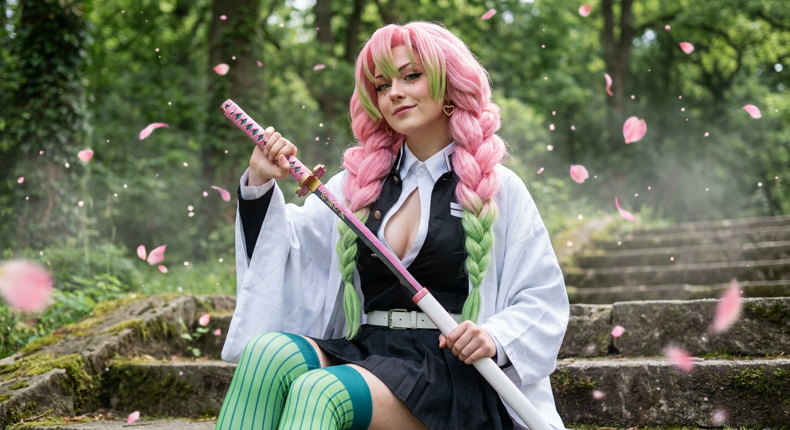
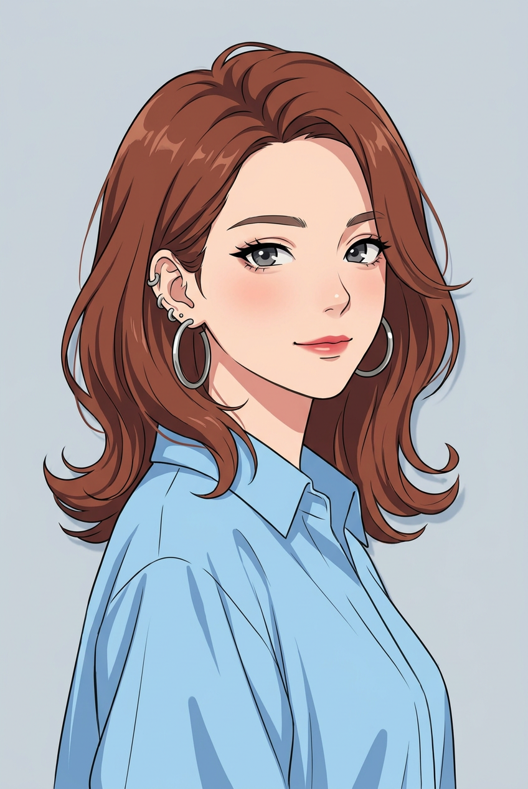
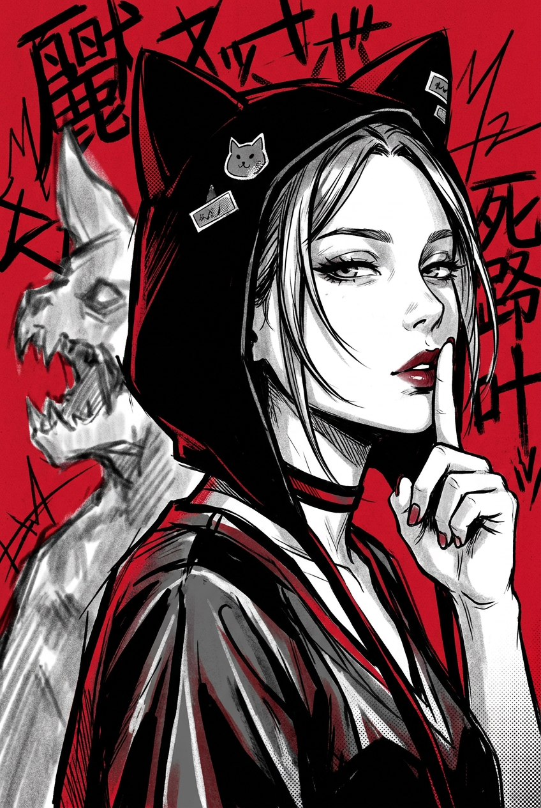
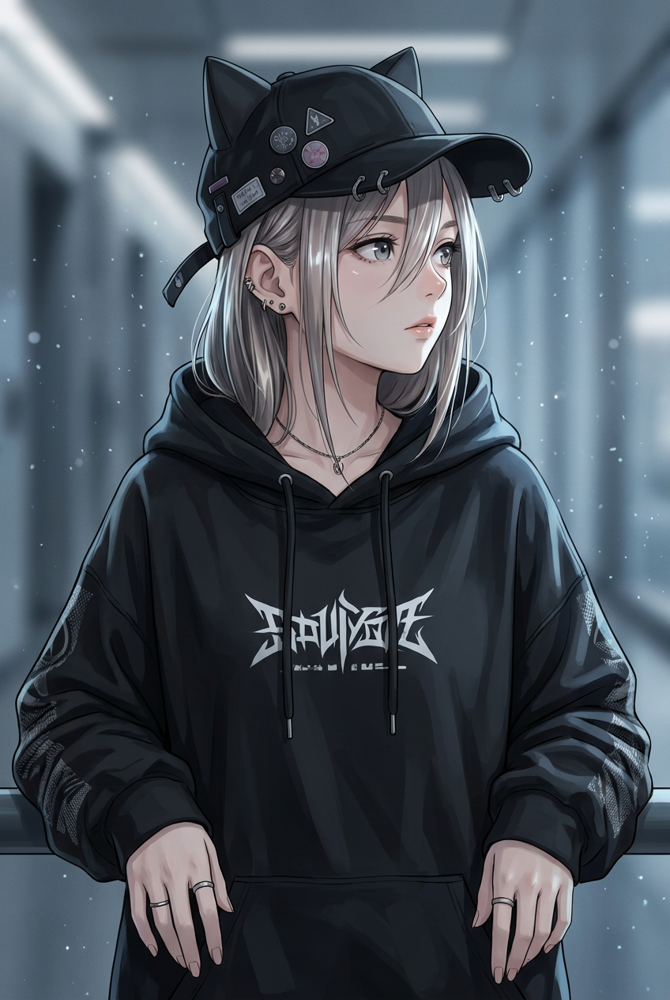
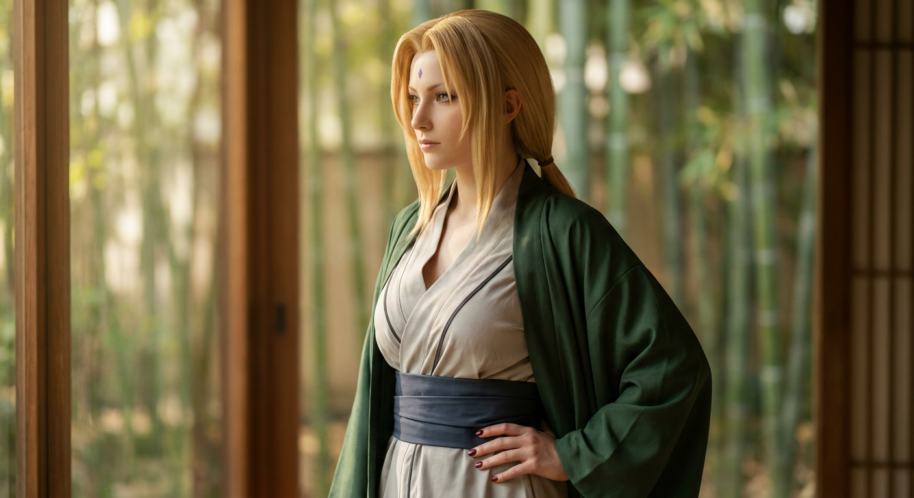
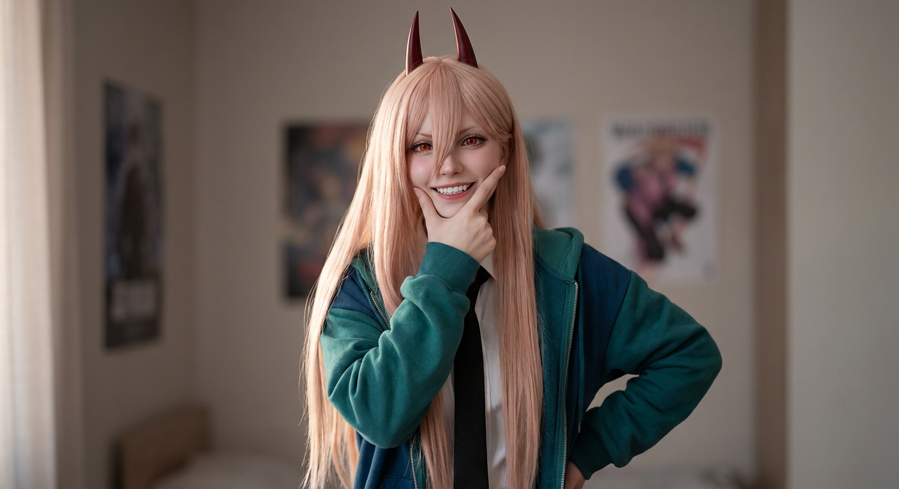

ИИ-фото в стиле аниме: 9 промптов для нейросети

Аниме-образ легко превращается в случайный костюм с пластиковым лицом, лишними пальцами и непохожей причёской. Хороший промпт помогает заранее зафиксировать внешность, позу, одежду, свет и настроение кадра.
В подборке — девять сценариев: от фотореалистичного косплея Момо Аясэ и Мицури до манга-арта, дерзкого портрета с гримом и образа Цунаде. Промпты подойдут для генерации по тексту и работы с референсом лица.
Как сгенерировать такое фото: пошагово
Нужен снимок анфас при ровном свете, лицо в кадре целиком, без тёмных очков и головных уборов. Разрешение от 1000 пикселей по короткой стороне. Чем чётче исходник, тем точнее модель повторит черты.
Выберите сценарий ниже и нажмите «Копировать» — текст уйдёт в буфер целиком, вместе с командой сохранения внешности. Эта команда стоит первой строкой и отвечает за то, чтобы на выходе было ваше лицо, а не случайное.
Кнопка «Сгенерировать» рядом с каждым промптом открывает модель в новой вкладке. Nano Banana Pro работает с референсом лица — в отличие от моделей, которые генерируют портрет с нуля и узнаваемость теряют.
Промпт — в поле ввода, портрет — через загрузку референса. Порядок значения не имеет, но без референса команда сохранения внешности работать не будет: модели нечего сохранять.
Для сторис и ленты берите 9:16, для превью и обложек — 4:3. Первый результат редко идеален: если поза или свет ушли не туда, поправьте соответствующую часть промпта и запустите заново. Обычно хватает двух-трёх итераций.
9 промптов для генерации
1. Косплей Момо Аясэ
Строго сохранить внешность по загруженному референсу: черты лица, пропорции, мимику и текстуру кожи без изменений. Фотореалистичный fashion-косплей Момо Аясэ из DanDaDan с заметной аниме-эстетикой. Вертикальный средний план, почти портрет, лёгкое приближение камеры, резкость на глазах и лице, мягко размытый фон. Девушка смотрит прямо в объектив уверенно и чуть удивлённо, макияж аккуратный. Волосы короткие, прямое каре винно-каштанового или тёмно-каштанового оттенка, небольшой объём у корней, ровная аниме-чёлка и боковые пряди у лица, пробор близко к центру. Крупные плоские круглые серьги светло-бирюзового цвета, чёрный чокер. На ней розово-бежевая вязаная кофта с реалистичной фактурой, белая рубашка и тёмно-бордовый бант на воротнике. Одна рука поднята к лицу, пальцы складываются в выразительный косплей-жест, локоть частично попадает в кадр. Корпус развёрнут в сторону, голова слегка наклонена. Естественный мягкий свет, детальные швы и складки ткани, объектив 85 мм, f/2.0.
2. Деловой образ с косой

Строго сохранить внешность по загруженному референсу: черты лица, пропорции, мимику и текстуру кожи без изменений. Вертикальная фотореалистичная cosplay-фотография девушки в деловом образе возле современного здания. Чистое голубое небо, на заднем плане мягко размытые деревья и зелень. Показать полный рост или кадр 3/4 роста; корпус развернуть на три четверти, голову немного повернуть к камере. Поза спокойная, руки естественно опущены или частично выходят за границы кадра, без театральных жестов. Волосы ярко-красные, гладкие и прямые, с ровной чёлкой, собраны в длинную плотную косу; тонкие пряди обрамляют лицо. Натуральная кожа, реалистичные брови, неброский макияж, жёлтые глаза, взгляд в сторону объектива. Сохранить белую классическую рубашку и строгий деловой силуэт. Дневной рассеянный свет, натуральные цвета, высокая детализация ткани и волос, объектив 50 мм, f/2.8, малая глубина резкости.
3. Комиксный портрет по референсу

Строго сохранить внешность по загруженному референсу: черты лица, пропорции, мимику и текстуру кожи без изменений. Вертикальная графичная иллюстрация в эстетике современного комикса и манги: чистый инк-лайнарт, тонкие аккуратные контуры с отдельными более плотными линиями, гладкие цветовые заливки, мягкий cel shading, ощущение векторного рисунка без пор и фотореалистичной кожи. Портрет по пояс или до бёдер, девушка стоит в полуобороте 3/4, голова чуть повернута к зрителю, взгляд направлен немного рядом с камерой. Выражение спокойное и уверенное, лёгкая полуулыбка. Сохранить индивидуальную форму глаз, бровей, носа, губ, овал лица, мимику и пропорции. Кожа ровная, с мягкими матовыми тенями под скулами и подбородком. Аккуратный нос, чёткие глаза, тонкая подводка, выразительные ресницы, мягкие брови, губы с умеренным блеском. Фон простой, линии чистые, без лишнего реализма и визуального шума.
4. Мицури на каменной лестнице

Строго сохранить внешность по загруженному референсу: черты лица, пропорции, мимику и текстуру кожи без изменений. Cinematic cosplay photo Мицури Канродзи из Kimetsu no Yaiba: фотореализм, усиленный аниме-эстетикой. Девушка сидит или держит уверенную позу на каменных ступенях под открытым небом. Камера расположена немного ниже уровня глаз, взгляд направлен прямо в объектив, в выражении есть игривая уверенность, губы нейтральные или с едва заметной улыбкой. Главный фокус — на глазах и лице. Волосы длинные, густые, волнистые, уложены в косы или хвосты с характерным силуэтом-сердечком; основа розово-карамельная, отдельные зоны и кончики зелёные или лаймовые. Парик выглядит аккуратно, с реалистичной текстурой волокон. Натуральная кожа, выразительные глаза, лёгкий румянец, чёткий контур губ, аккуратный косплей-макияж без воскового эффекта. Добавить небольшие серьги или украшения у ушей. Одежда многослойная: белое хаори и объёмная форма охотницы на демонов, видны складки ткани. Мягкий дневной свет, объектив 50 мм, f/2.2.
5. Clean anime с серьгами

Строго сохранить внешность по загруженному референсу: черты лица, пропорции, мимику и текстуру кожи без изменений. Вертикальный портрет в стиле clean anime и cel shading, кадр чуть ниже плеч. Девушка слегка наклоняет голову вправо и поворачивается на три четверти, на лице спокойная уверенность и небольшая полуулыбка. Использовать мягкий румянец на щеках, аккуратный нос и тонкие розово-красные линии губ. Большие глаза с тёмными верхними ресницами, двумя-тремя аккуратными бликами, тонкими бровями и лёгкой тенью под ресницами. Волосы слегка растрёпаны: широкая дуга прядей обрамляет лицо, часть локонов ложится на плечи, кончики мягко закручены. Рисовать волосы чёткими мазками с локальными тенями и чистыми контурами, не превращать их в фотореалистичные пряди. Добавить крупные круглые серьги или каффы. Фон однотонный или с лёгким градиентом, цветовая палитра чистая, без лишних деталей, мягкий рассеянный свет, вертикальное разрешение 2048×3072.
6. Мрачный жест тишины

Строго сохранить внешность по загруженному референсу: черты лица, пропорции, мимику и текстуру кожи без изменений. Динамичный вертикальный manga-art в эстетике gritty anime и sketch poster. Главный персонаж крупным планом, лицо в центре, голова повернута вправо на три четверти. Выражение спокойное, с лёгким прищуром. Девушка подносит поднятую кисть к губам и показывает жест «тише»: палец касается губ, ноготь и контур руки прорисованы графично. Яркие глаза с тёмными ресницами и жёсткими тенями, тонкие брови, губы покрыты тёмной бордовой помадой, рот слегка приоткрыт и частично выходит к краю кадра. Несколько прядей падают на щёку, волосы переданы крупными ручными штрихами. На голове чёрный капюшон или головной убор с двумя треугольными кошачьими ушками, уши подчёркнуты контрастным контуром. Грубоватая тушь, скетчевые линии, пятна чёрной заливки, ограниченная палитра с бордовым акцентом, постерная композиция.
7. Косплей с кровавым гримом

Строго сохранить внешность по загруженному референсу: черты лица, пропорции, мимику и текстуру кожи без изменений. Фотореалистичный вертикальный cosplay-портрет по голову и плечи, камера расположена очень близко, лёгкая перспектива смартфон-фото, персонаж занимает почти весь кадр. Фон — ровная светлая стена без надписей и предметов. Лицо слегка развёрнуто в сторону, взгляд направлен в камеру или чуть мимо. Выражение дерзкое и напряжённое, губы сомкнуты или немного приоткрыты, на лице провокационный языковой намёк. Правая рука поднята к щеке: длинные ногти касаются кожи и слегка языка, пальцы хорошо читаются. На шее, щеках и ключицах реалистичный, но явно косплейный грим с пятнами, потёками и точечными красными брызгами. Волосы длинные, прямые, густые, сливово-фиолетового оттенка. Сохранить выразительный макияж, натуральную текстуру кожи и фактуру декоративной крови, не превращать эффект в настоящую травму. Жёсткий фронтальный свет, объектив 35 мм, f/1.8, высокая детализация.
8. Аниме-портрет с ушками

Строго сохранить внешность по загруженному референсу: черты лица, пропорции, мимику и текстуру кожи без изменений. Вертикальный аниме-портрет крупным планом до пояса: голова девушки развёрнута вправо на три четверти, взгляд направлен в камеру и немного в сторону, настроение задумчивое и спокойное. Бледная кожа, большие глаза с мягкими бликами, лёгкие тени под глазами, тонкие светлые брови. Волосы разделены на тонкие пряди, часть закрывает щёку и падает на лицо; добавить глянцевые световые полосы и реалистичную аниме-прорисовку локонов. На голове чёрная шапка или кепка с двумя треугольными кошачьими ушками, сверху небольшие нашивки и декоративные элементы вроде патчей и значков, сбоку ремешки, посадка слегка асимметричная. Одежда — чёрный оверсайз-худи или пуловер с объёмными складками и высоким мягким воротом. Свет мягкий, фон тёмный нейтральный, контраст умеренный, лицо остаётся главным акцентом, разрешение 2048×3072.
9. Цунаде в профиль

Строго сохранить внешность по загруженному референсу: черты лица, пропорции, мимику и текстуру кожи без изменений. Фотореалистичный cosplay-портрет Цунаде из Naruto, кадр от пояса, лицо показано в профиль и повернуто влево. Взгляд направлен вдаль, выражение спокойное и уверенное, макияж аккуратный, кожа естественная, без пластикового эффекта. Волосы длинные, гладкие, медово-блондовые или пшеничные, собраны сзади в низкий хвост либо частично убраны; мягкие боковые пряди и чёлка повторяют характерную укладку персонажа. На лбу обязательная фиолетовая метка в форме небольшого узкого ромба. На девушке светло-серое или бледно-бежевое внутреннее кимоно с V-образным вырезом и мягкой драпировкой, заметны естественные складки. Талию обхватывает широкий тёмно-синий или графитовый пояс-оби с аккуратным узлом. Сверху — тёмно-зелёное матовое хаори-кимоно с широкими рукавами и свободными полами. Мягкий боковой дневной свет, нейтральный фон, объектив 85 мм, f/2.5, резкость на лице.
Что важно учесть в этом стиле
Аниме-образ держится на нескольких узнаваемых признаках: силуэте причёски, форме глаз, цветовой палитре и характерной детали костюма. Если описать только имя персонажа, нейросеть может смешать разные версии образа. Лучше отдельно указать волосы, аксессуары, одежду, позу и выражение лица.
Для фотореалистичного косплея задавайте объектив и глубину резкости: 85 мм и f/2.0 дадут портрет с мягким фоном, 35 мм добавит ощущение снимка на смартфон. Для манга-арта, наоборот, полезнее описывать толщину линий, cel shading, плоские заливки и отсутствие пористой кожи.
Идеи для вариаций
- Перенесите косплей на крышу, в школьный коридор или на ночную улицу с неоном.
- Замените дневной свет на контровой закатный или холодный свет от витрин.
- Сделайте один образ в трёх техниках: clean anime, акварельная манга и gritty sketch poster.
- Добавьте крупный реквизит: зонт, старую камеру, букет или папку с документами.
- Попросите нейросеть сохранить костюм, но поменять эмоцию — от спокойной до вызывающей.
Как собрать свой промпт
Начните с формата кадра и типа изображения: вертикальный портрет, полный рост, cosplay photo или manga-art. Затем опишите композицию, поворот головы, взгляд и жест. После этого добавьте внешность, причёску, одежду и две-три детали, по которым образ узнаётся.
В финале зафиксируйте свет, фон, объектив и ограничения: без лишних пальцев, текста, логотипов, пластикового лица и случайных аксессуаров. Для референса полезно разделять постоянные параметры — лицо и причёску — и переменные: фон, позу, цвет света. Сделайте 4–8 попыток, меняя за раз только один блок.
Ошибки, из-за которых кадр не получается
- Слишком общий запрос. Одного имени персонажа мало: модель может потерять цвет волос, аксессуары и детали костюма.
- Несовместимые стили. Сочетание фотореализма, плоского cel shading и грубой туши без приоритетов часто даёт грязную картинку.
- Перегруженная поза. Сложный жест, поворот корпуса и необычный ракурс повышают риск ошибок в руках и пальцах.
- Нет параметров кадра. Без указания плана, фона и фокусного расстояния композиция получается случайной.
- Слишком много запретов. Длинный список негативных условий может вытеснить главные признаки персонажа.
Частые вопросы
Как сделать такое ИИ-фото бесплатно?
Попробуйте Kandinsky и Шедеврум: у них можно начать с текстового описания, но доступность генераций, качество анатомии и точность костюма зависят от текущих ограничений сервиса. Krea AI и Arena.ai удобны для экспериментов и сравнения результатов, однако работа с референсом лица поддерживается не во всех режимах. Бесплатные варианты часто дают меньше попыток, слабее держат внешность и могут добавлять водяные знаки или очередь.
Как сохранить лицо по фотографии?
Загрузите чёткий референс без сильных фильтров, где лицо хорошо освещено и не закрыто волосами. В промпте отдельно опишите нужный стиль, но не перегружайте его новыми чертами лица. Если сервис позволяет настроить силу референса, начните со среднего значения и сделайте несколько вариантов.
Почему нейросеть меняет костюм персонажа?
Модель может не знать конкретную версию одежды или смешивать её с похожими образами. Перечислите вещи по слоям: сначала верхний элемент, затем рубашку, пояс, аксессуары и цвета. Повторите ключевую деталь один раз в конце промпта и добавьте негативное условие вроде «без современной замены костюма».
Как убрать лишние пальцы и артефакты?
Упростите жест, сделайте кисть крупнее в кадре и явно укажите количество пальцев. Для портрета лучше выбирать план по грудь или плечи, где руки не находятся на краю изображения. После генерации используйте перерисовку проблемной области, а не меняйте весь промпт целиком.